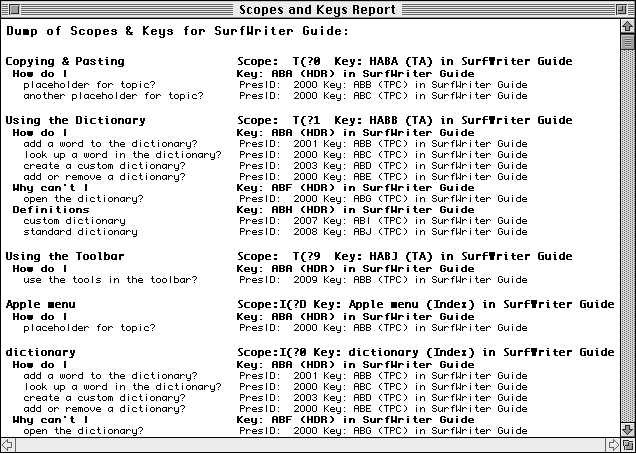
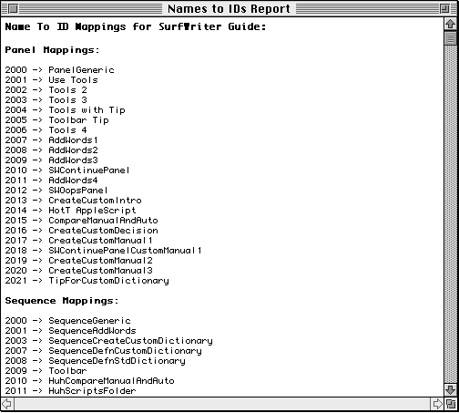
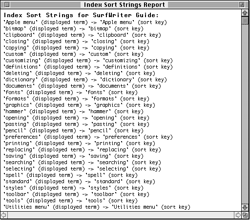
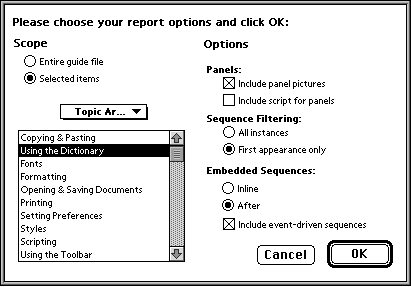
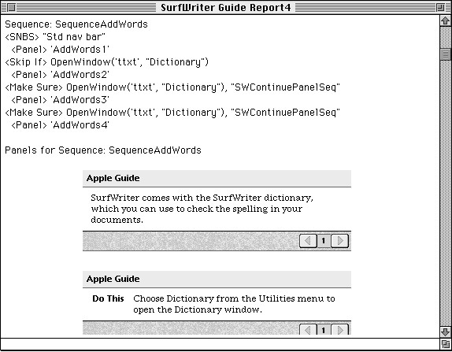

Generating Reports
By using Guide Maker's Reports menu, you can get a quick, in-depth look at your guide file. You canThe Scopes and Keys, Names to IDs, and Index Sort Strings reports appear in a new window. You can save or print this information using the Save Text or Print Text commands from the File menu. The Guide File Info report is written to a file that you name before generating the report.
- get a list of all topics and their associated sequence IDs (Scopes and Keys report)
- get a list of each panel's or sequence's name and ID (Names to IDs report)
- verify that index terms are correctly displayed (Index Sort Strings report)
- get a printout of your guide file (Guide File Info report)
- Note
- To create a Names to IDs report or a Guide File Info report, the guide file and its symbol file must be located in the same folder.
The Scopes and Keys Report
A Scopes and Keys report contains a complete list of the headers and topics for each topic area and each index term in a guide file and gives information about each associated sequence. A Scopes and Keys report also lists the words specified by the Guide Script commands <Exception>, <Ignore>, and <Synonym>. Figure 6-6 shows excerpts from a Scopes and Keys report for SurfWriter Guide. This excerpt shows information about the topic areas "Copying & Pasting", "Using the Dictionary", and "Using the Toolbar". It also shows information about the index terms "Apple menu" and "dictionary". Note that the number following the text "PresID:" is the sequence ID associated with the topic.Figure 6-6 A Scopes and Keys report

The Names to IDs Report
A Names to IDs report contains mappings of all panel IDs to their panel names, all sequence IDs to their sequence names, and all text block IDs to their text block names. Figure 6-7 shows a sample of a generated Names to IDs report.Figure 6-7 A Names to IDs report

The Index Sort Strings Report
An Index Sort Strings report contains a list of all the index terms in a guide file and each index term's sort key. Figure 6-8 shows part of a generated Index Sort Strings report.You can specify in your source file how you want Apple Guide to sort your index terms. For information about sorting index terms, see the chapter "Guide Script Command Reference," in Part 4.
Figure 6-8 An Index Sort Strings report

The Guide File Info Report
You can generate a complete report on your guide file by choosing the Guide File Info command from the Reports menu. The generated report includes sequence definitions, panel definitions, and pictures of the panels as they will appear onscreen.After you choose the Guide File Info command, Guide Maker displays a dialog box asking you to specify your main source file (select your build file if you have multiple source files). It then displays another dialog box, asking you to choose a place to save the file and to choose a file format for the file. Next, it displays the Options dialog box. In it, you can specify the information you want your guide file report to contain. Figure 6-9 shows the Options dialog box.
Figure 6-9 The Options dialog box

You can choose to generate a report on your entire guide file or only selected items, such as a specific topic area, index term, or sequence. You can request that Guide Maker include the panel pictures as well as the panel definitions in the report. Generating a report like this can be a convenient way to review the content of your guide file.
Figure 6-10 illustrates a sample guide file report, saved in TeachText format. As shown in this report, a sequence definition is followed by pictures of the panels in the sequence.
- Note
- To create a Guide File Info report, you must have XTND translators installed on your system.
Figure 6-10 A Guide file Info report
